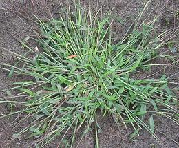

Crabgrass -
[Genus Digitaria of subfamily Panicoideae]

These grasses have been grown for thousands of years, both for the tiny grains for human consumption, and the grass itself for animal fodder. These grasses are highly nutritious with a high protein content. Photo by Rasbak distributed under license Creative Commons Attribution-ShareAlike v3.0 Unported.
More on Other Grains.
|
Fonio -
[Digitaria exilis (White fonio) |
Digitaria iburua (Black fonio)]
These grains are cultivated as minor crops. D. exilis is cultivated in Guinea, Togo, Nigeria and Senegal. The very similar D. iburua is cultivated in Nigeria, Niger, Togo and Benin. This grass barely has seed heads. The seeds are aranged single file up a thin stem. and are very tiny. They are also difficult to hull. Traditional methods include pounding with sand, then separating out the sand and husks with water, but a simple husking machine was invented in 1996. This grain is now being promoted by the Health Food industry as more nutritious than Quinoa, and also by chefs of fancy restaurants. In both cases the enthusiasm is primarily because Fonio is exotic, expensive, difficult to get and fits into the current gluten free fad. This threatens to make a food poor region even more food poor. Buying: As it is being heavily promoted as a "gluten free" "ancient "superfood" Fonio seeds and flour can be purchased on-line from many sources. The photo specimens, from Nigeria,were purchased for 2018 US $1.10 per ounce. Cooking: In Africa, Fonio is most often placed in a basket and steamed. It can also be steamed like rice in a tightly closed saucepan, keeping a 1 to 1 Fonio to Water ratio. A little oil can be included to keep the grains more separated. Subst: Quinoa.
Large Crabgrass -
[Hairy Crabgrass, Purple Crabgrass, Polish Millet;
Digitaria sanguinalis]
This annual crabgrass, found in temperate and tropical regions of both
hemispheres, is used mainly as a nutritious animal fodder with an
unusually high protein content. To a lesser extent, the seeds are
used for human consumption, particularly in Germany and Poland. This
grass is also well known for invading lawns that aren't carefully
maintained.
Raishan -
[Digitaria compacta]
D. compacta is cultivated in a small region of Meghalaya
state in far northeast corner of India.
Photo by Krzysztof Golik distributed under license
Creative Commons
Attribution-ShareAlike v4.0 International.
|